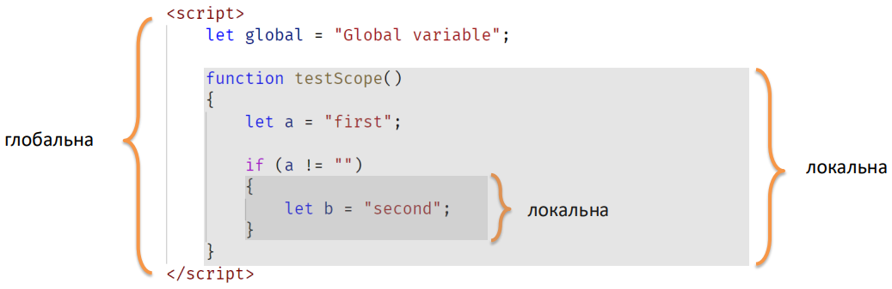
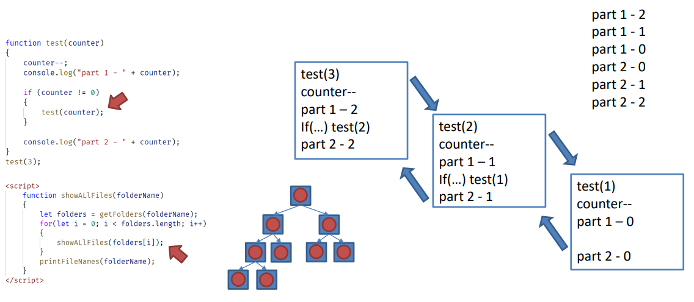

Область видимості (scope) - частина програмного коду, у межах якого створений ідентифікатор дозволяє звернутися до прив’язаної до нього сутності.

Приклади 1-4Суворий режим (strict mode) – режим виконання сценарію, який змушує розробника використовувати більш обмежений синтаксис мови, що сприяє написанню якіснішого коду через заборону проблемних конструкцій мови.
'use strict'
let x = 1
function test1() {
y = 2;
}
function sayHi() {
alert( "Привіт" );
}
Синтаксис Оголошення Функції дозволяє викликати функцію раніше, ніж вона були визначена в коді
let sayHi = function() {
alert( "Привіт" );
}
Синтаксис дозволяє створювати функцію всередині будь-якого виразу.
Функціональний Вираз буде створено тільки тоді, коли до нього дійде виконання і тільки після цього він може бути використаний.
Існує ще один простий та короткий синтаксис для створення функцій, який часто доцільніше використовувати замість Функціонального Виразу
let func = (arg1, arg2, ..., argN) => expression;
Цей код створить функцію func з аргументами arg1..argN, що обчислює expression з правого боку (використовуючи ці аргументи) та повертає його результат.
let func = function(arg1, arg2, ..., argN) {
return expression;
};
Рекурсія – виклик функції з цієї функції.

function ask(question, yes, no) {
if (confirm(question)) yes()
else no();
}
function showOk() {
alert( "Ви погодились." );
}
function showCancel() {
alert( "Ви скасували виконання." );
}
ask("Ви згодні?", showOk, showCancel);
Аргументи showOk та showCancel функції ask називаються функціями зворотного виклику або просто колбеками.
Суть полягає в тому, що ми передаємо функцію та очікуємо, що вона буде викликана (англ. “called back”) пізніше, якщо це буде потрібно. У нашому випадку, showOk стає колбеком, якщо відповідь — “yes”, а showCancel, якщо відповідь — “no”.
function ask(question, yes, no) {
if (confirm(question)) yes()
else no();
}
ask(
"Ви згодні?",
function() { alert("Ви погодились."); },
function() { alert("Ви скасували виконання."); }
);
У цьому прикладі функції оголошені всередині виклику ask(...). Вони не мають власного ім’я, тому називаються анонімними. До таких функцій не можна доступитись поза ask (бо вони не присвоєні змінним).